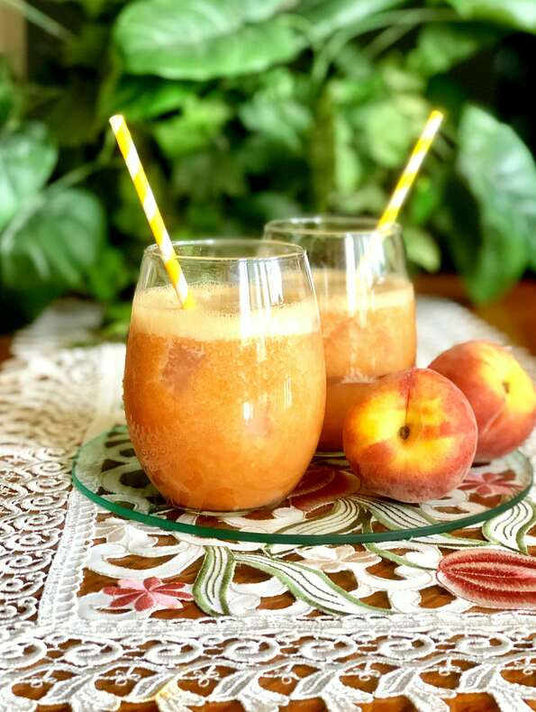

Peach Tea

This is a very light peach tea, great for a summer day.
Simple peach tea to accompany with cookies and a peaceful day.
Ingredients
- 4 cups water
- 3 family size tea bags
- 2 fresh peaches - peeled, pitted, and sliced
- 1 ½ teaspoons stevia powder
Steps
- Bring 3 cups water to a boil in a saucepan over high heat. Add the tea bags, and steep for 15 minutes. Remove tea bags.
- Meanwhile, place peaches with 1 cup water into the jar of a blender, and blend until very smooth. Pour the peach mixture, tea, and stevia powder into a 1 gallon pitcher. Fill the pitcher to the top with water, and stir until blended.
Go back